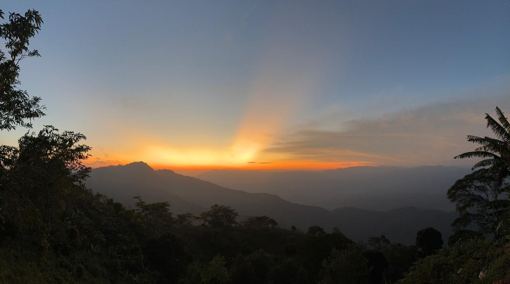

Foto · Trioceros deremensisLC
Usambara-Dreihornchamäleon
Trioceros deremensisEin grosses, waldbewohnendes Chamäleon; die Männchen tragen drei markante Hörner. Eine Leitart dieser Berge.

Ein Bergregenwald von Weltrang — Teil der Eastern Arc Mountains, einem der ältesten und artenreichsten Waldökosysteme der Erde.
Das Nilo Nature Forest Reserve liegt in den East Usambara Mountains im Nordosten Tansanias. Es ist ein Fragment eines uralten submontanen Bergregenwaldes, der über Jahrmillionen mit bemerkenswerter klimatischer Kontinuität bestanden hat.
Die Usambaras gehören zu den Eastern Arc Mountains — einer Kette isolierter „Waldinseln", die zu den bedeutendsten Biodiversitäts-Hotspots des Planeten zählt. Ihre lange Isolation und ihr stabiles Klima machten sie zu einem Motor des Endemismus: unzählige Tier- und Pflanzenarten leben hier und nirgends sonst auf der Erde. Botaniker nennen die Kette seit langem das „Galápagos Afrikas".
Und dieses Erbe steht unter Druck. Illegaler Einschlag wertvoller Harthölzer, Wilderei und Rodung am Waldrand zehren stetig am Reservat, während die Ranger-Kapazität, die es schützen soll, dünn bleibt. Friends of Nilo Forest besteht, um diese Lücke schliessen zu helfen.
Auf präkambrischem kristallinem Gestein gebaut und über Jahrmillionen klimatisch stabil — der Grund, warum sich hier so einzigartiges Leben ansammeln konnte.
Geologie →Dreihornchamäleons, Buschvipern, einige der seltensten Vögel Afrikas, der Wildvorfahr des Usambaraveilchens — eine Konzentration endemischer Arten mit wenigen Vergleichen.
Fauna →Was Jahrmillionen zur Entstehung brauchte, kann in einer Generation verloren gehen. Schutz vor Ort ist der entscheidende Faktor — und dort setzen wir an.
Bedrohungen →An wenigen Orten vergleichbarer Grösse leben so viele Arten, die es nirgends sonst gibt. Die East Usambaras sind eine Hochburg des Endemismus.
Ein grosses, waldbewohnendes Chamäleon; die Männchen tragen drei markante Hörner. Eine Leitart dieser Berge.
Eine kleine, baumbewohnende Viper mit auffälligen erhabenen Schuppen über den Augen.
Einer der seltensten Vögel Afrikas, beschränkt auf wenige Kronendach-Flecken der East Usambaras.
Ein winziger, schwer zu findender Vogel mit ausserordentlich kleinem Verbreitungsgebiet.
Ein Kronendach-Spezialist des Tief- und Bergwaldes.
Ein grosser Waldkauz, endemisch im Eastern Arc, selten gesehen und wenig erforscht.
Eine kleine Kröte der Laubstreu, die statt Eier abzulegen voll entwickelte Junge zur Welt bringt.
Die Usambaras sind ein Zentrum der Schmetterlingsvielfalt mit vielen lokalen Formen.
Für die Botanik sind die Usambaras legendär. Hier liegt die wilde Heimat des Usambaraveilchens.
Niederschlag, Temperatur und Nebel ändern sich mit jeder hundert Meter Höhe, und der Wald ändert sich mit ihnen.
Kühler, wolkengespeister Wald auf höchstem Grund; Stämme und Äste dicht mit Moos, Farnen und aufsitzenden Orchideen.
Das Herz des Reservats: hoher immergrüner Wald aus Kampferholz und anderen Harthölzern.
Ein reiches Übergangsband, in dem sich Tiefland- und Bergarten überlagern.
Warmer, feuchter Wald am Fuss der Kette.
Der Wildvorfahr der weltweit bekanntesten Zimmerpflanze wächst an genau diesen Hängen.
Ein Riese des Bergwaldes und ein begehrtes Nutzholz — genau deshalb ein Hauptziel des illegalen Einschlags.
Entlang beschatteter Bäche und feuchter Schluchten geben Baumfarne dem Wald seinen urzeitlichen Charakter.
Das feuchte Kronendach beherbergt eine Fülle aufsitzender Orchideen.
Zarte Kräuter des schattigen Unterwuchses.
Ein hoher Kronendachbaum mit grossen Samenkapseln, reich an essbarem Fett.
Die aussergewöhnliche Artenvielfalt der Usambaras ist kein Zufall. Sie ist in Gestein und Klima eingeschrieben.
Der Eastern Arc ist aus präkambrischem metamorphem und kristallinem Grundgebirge geformt — einem der ältesten Gesteine Ostafrikas.
Bruchschollen-Tektonik hob die Kette zu steilen, isolierten Massiven. Jedes wurde zu einer Waldinsel — und Isolation ist der klassische Motor des Endemismus.
Zum Indischen Ozean gewandt, fangen die Berge seit Jahrmillionen feuchte Seewinde ab. Durch globale Eiszeiten hindurch gilt dieser Wald als Refugium.
Der Nilo-Wald ist nicht durch ein einzelnes dramatisches Ereignis bedroht, sondern durch stetigen, sich summierenden Druck.
Wertvolle Harthölzer — allen voran Kampferholz — werden für Nutzholz gefällt.
Jagd und das Sammeln seltener Reptilien, Amphibien und Vögel belasten zusätzlich Arten mit ohnehin kleinen Populationen.
Rodung und Brand für den Anbau entlang der Waldgrenze fressen sich langsam ins Reservat.
Die Tanzania Forest Services (TFS) haben das Mandat, das Reservat zu schützen, doch die Patrouillenkapazität ist begrenzt.
Dieser Druck hat soziale und wirtschaftliche Wurzeln. Für die Menschen am Waldrand sind Holz, Land und wilde Ressourcen Existenzgrundlage, nicht Mutwille.
Friends of Nilo Forest ist ein gemeinnütziger Schweizer Verein mit einem klaren Zweck: den Schutz des Nilo Nature Forest Reserve vor Ort zu stärken.
Mehr Patrouillentage, bessere Feldausrüstung und ein fester Stützpunkt nahe dem Wald.
Wir arbeiten direkt mit den Tanzania Forest Services zusammen, die das gesetzliche Mandat tragen.
Die Regeln zum Schutz dieses Waldes existieren bereits; was fehlt, ist die alltägliche Kapazität, sie anzuwenden.
Wir ergänzen die Akteure, die in dieser Landschaft bereits tätig sind — wir wollen sie nicht ersetzen.
Viele Institutionen halten Usambara-Arten ex situ. Friends of Nilo Forest bietet einen unkomplizierten Weg, dieselben Arten in situ zu unterstützen.
Schützen Sie die wilden Populationen hinter den Tieren und Pflanzen Ihrer Sammlung.
Feldfotografie, Filmmaterial und Artnotizen aus dem Reservat.
Kein grosser Apparat zwischen Ihnen und dem Wald.
Ein einzelner, klar umrissener Wald und ein eindeutiger Schutzzweck.
Übernehmen Sie eine Patenschaft für eine Leitart Ihrer Sammlung.
Fördern Sie einen definierten Baustein des Schutzes.
Entwickeln Sie gemeinsam Beschilderung, Ausstellungen oder Kampagnen.
Laden Sie einen Vortrag für Ihr Team ein.
Ralf — Ihre direkte Ansprechperson für institutionelle Partnerschaften.
Es gibt einige gute Wege, Teil davon zu sein.
Treten Sie dem Verein bei. Mitglieder tragen die Initiative und erhalten Feldberichte aus dem Reservat.
Mitgliedschaft anfragenZoos, Botanische Gärten, naturkundliche Museen und Stiftungen können mit uns zusammenarbeiten.
Für Institutionen →Finanzielle Unterstützung ist willkommen und fliesst direkt in den Schutz vor Ort.
Friends of Nilo Forest, 8005 ZürichFriends of Nilo Forest ist ein gemeinnütziger Verein nach Schweizer Recht mit Sitz in Zürich.
Für Mitgliedschaft, institutionelle Partnerschaften, Vorträge oder Presse — der schnellste Weg ist eine direkte Nachricht.